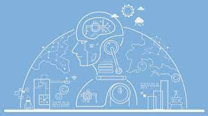

La inteligencia artificial (IA), en el contexto de las ciencias de la computación, es una disciplina y un conjunto de capacidades cognoscitivas* e intelectuales expresadas por sistemas informáticos o combinaciones de algoritmos cuyo propósito es la creación de máquinas que imiten la inteligencia humana para realizar tareas, y que pueden mejorar conforme recopilen información.
Las Inteligencias artificiales utilizan algoritmos y modelos matemáticos para procesar grandes cantidades de datos y tomar decisiones basadas en patrones y reglas establecidas a través del aprendizaje automático, que es la capacidad de una máquina para aprender de forma autónoma a partir de datos sin ser programada

A diferencia de la inteligencia sintética, la inteligencia artificial no tiene como finalidad reemplazar a los humanos, sino mejorar significativamente las capacidades y contribuciones de estos